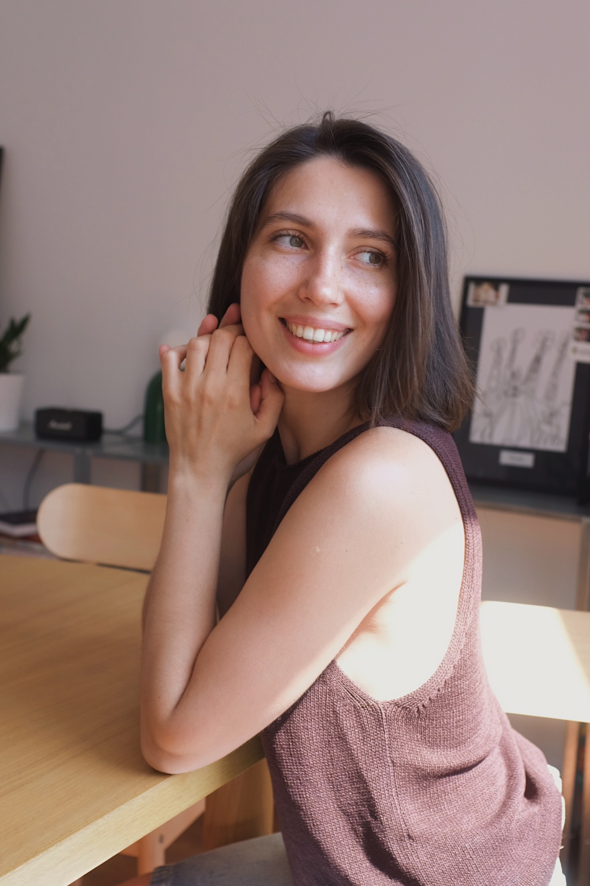

Чувства
Учимся замечать и лучше понимать то, что вы переживаете.
ФОРМАТ РАБОТЫ
Пространство, в котором можно бережно исследовать себя, свои чувства, реакции и потребности.

ЗАПРОСЫ
В терапию можно прийти без готового ответа на вопрос «что со мной». Иногда достаточно ощущения, что так, как сейчас, уже не хочется.
ФОРМАТ
Для тех, кто готов к планомерным и устойчивым жизненным переменам.
Мы фиксируем удобный день и время для еженедельных встреч — один раз в неделю.
Так появляется стабильное и безопасное пространство, которое сохраняется на протяжении всего процесса.
ПРОЦЕСС
Учимся замечать и лучше понимать то, что вы переживаете.
Исследуем привычные способы реагировать на себя, людей и жизненные ситуации.
Проясняем, что для вас важно, и ищем свои опоры.
Если хочется начать,
можно написать мне.